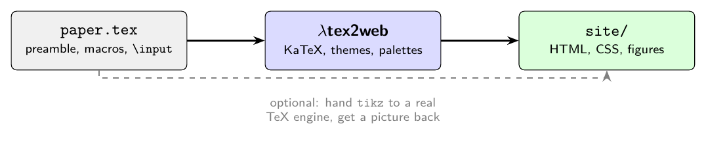

1How To Run#
Install from GitHub (Node 20+):
$ npm install leoldev/latex2webThen you can run:
$ npx leoldev/latex2web paper.tex -o distIf you mean to change the source i.e. for your own config:
$ git clone https://github.com/leoldev/latex2web
$ cd latex2web && npm install
$ node src/cli.js paper.tex -o distThen:
$ latex2web paper.tex -o dist
$ latex2web paper.tex -o dist --theme notes
$ latex2web paper.tex -o dist --config house.jsonIf you want to know how this website's code works, dist has a copy of
index.html and a file per document with a shared css. The figures are
then in assets and KaTeX in vendor.
2What tex2web does#
Or really, what it can do.
| In LaTeX: | tex2web Out: |
|---|---|
\ input, \ include | all included; including nested, section/equation numbers and label scopes |
equation, align, gather, multline,
cases | all math is rendered, including references between equations. |
figure, table, tabular | rendered and captioned (*image files are copied out of the source tree) |
tikzpicture | uses a TeX engine with your preamble's own macros and styles (or shown as source) |
lstlisting, verbatim, minted | recognises language syntax and formats code |
thebibliography, a .bbl, a .bib | citations numbered and linked (when possible) |
\ ref, \ eqref,
\ cite | included |
\ href, \ url,
\ footnote | all transcribed as written |
3What it can't do#
tex2web isn't a TeX engine and doesn't plan on being one. There is
unfortunately then no typesetting, no package resolution, and no expansions beyond
\ newcommand and \ def in your own
preamble. Anything it doesn't recognised will be spit out as text.
Also:
TikZ needs an engine. Diagrams are compiled with
pdflatexwhen installed, so a figure looks like the source. With no engine on the machine they appear as source.Vector figures are rasterised. A PDF inside an
imgelement will show nothing, and is why the Ricci flow page is megabytes large.

All three examples featured on this cite went through the same command that built this page (though with different configurations), from the original LaTeX files off arxiv. Please refer to the documentation page for more information.